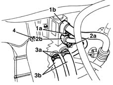
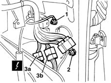
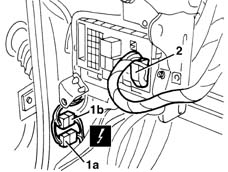
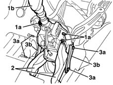
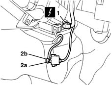
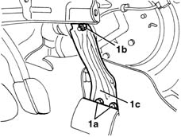
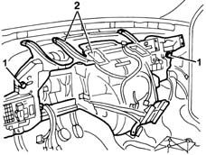
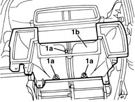
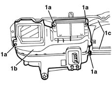

5040C12 air conditioner housing - r r with facia disconnected
- Path
- Procedures > 50 AUXILIARY UNITS > 5040 AIR CONDITIONING CASING AND COMPONENTS > 5040C air conditioner box and components > 5040C12 air conditioner housing - r r with facia disconnected
- Kind
- repair procedure (removal / refitting; the operation number is the code)
- Applies to
- all engines; all production periods
- Interactive page
- https://sloeber94.github.io/elrnDB-lYpsln/en/#/2429319
Applies to: all engines; all production periods
Applies to: all engines; all production periods
 Removing
Removing
 Refitting
Refitting4110A11 steering wheel - r+r for replacement or check for versions with air bag
7040A30 Left instrument panel lower TRIM - R.R.
5550A12 complete stalk unit - r+r for versions with air bag
4110D20 steering electrical control device - r r
Drain the coolant ( 0010T84 coolant for air conditioning system dehydrate and recharge ).
Remove the components in the engine compartment that prevent access to the expansion valve.
1. Undo the bolt (1a) and disconnect the connector (1b) for the pipe from the expansion valve to the compressor.
2. Undo the bolt (2a) and disconnect the connector (2b) for the pipe from the expansion valve to the condenser.
Position a suitable container for recovering the coolant fluid.
3. Open the retaining bands (3a) and disconnect the heater fluid inlet and outlet pipes (3b).
Collect the coolant and seal the pipes to prevent foreign bodies from entering.
4. Undo the nut.

Applies to: all engines; all production periods
1. Work on the right side of the passenger compartment and disconnect the eyelet.
 | Name | Connector |
|---|---|---|
1 | Air conditioning earth |
2. Undo the bolt and release the connector bracket.
| Name | Connector |
|---|---|---|
2 | Passenger side dashboard earth |
3. Disconnect the electrical connections (3a, 3b).
| Name | Connector |
|---|---|---|
3a | /Rear dashboard coupling |
| Name | Connector |
|---|---|---|
3b | /Rear dashboard coupling |

Applies to: all engines; all production periods
1. Work on the left side of the passenger compartment and disconnect the electrical connections (1a and 1b).
| Name | Connector |
|---|---|---|
1a | Front / dashboard coupling |
| Name | Connector |
|---|---|---|
1a | Dashboard / air conditioner - heater connection |
2. Disconnect the electrical connection on the body computer.
| Name | Connector |
|---|---|---|
2 | Junction unit under dashboard |

Applies to: all engines; all production periods
1. Undo the three nuts (1a) and fold the gear lever assembly (1b) backwards.
2. Remove the two rear seat air connectors.
3. Undo the bolts (3a) and remove the brackets (3b).

Applies to: all engines; all production periods
1. Disconnect the front electrical connection on the Air Bag control unit.
| Name | Connector |
|---|---|---|
1 | Air bag control unit |
2. Undo the nut (2a) and release the eyelet (2b).
| Name | Connector |
|---|---|---|
2 | Air Bag earth |

Applies to: all engines; all production periods
1. Undo the lower bolts (1a) and the upper nut (1b). Keep the left side bracket (1c).

Applies to: all engines; all production periods
1. Undo the two bolts fixing the underdashboard crossmember.
2. Remove the crossmember complete with air conditioning casing.

Applies to: all engines; all production periods
Disconnect the electrical connections for the dashboard wiring and release the cable from the bands and from the retainers.
1. Undo the three bolts (1a) and remove the air duct (1b).

Applies to: all engines; all production periods
1. Undo the four nuts (1a) and separate the air conditioning casing (1b) from the crossmember (1b).

Applies to: all engines; all production periods
Refitting
RemovingCheck that the air conditioning casing is not damaged.
Fasten the air conditioning casing to the crossmember using the nuts.
 | Fastening | Component | Ø | Value (daNm) |
|---|---|---|---|---|
- | Nut | A/C CASE | M6 | 0.6 |
Position the upper air duct and fasten it using the bolts.
Connect the electrical connections for the dashboard wiring and secure it using the retainers and the bands.
Position the crossmember complete with air conditioning and fasten the two bolts to the recommended torque.
| Fastening | Component | Ø | Value (daNm) |
|---|---|---|---|---|
- | Bolt | FACIA TRIMMOUNT BEAM | M12 x 1.25 | 4.0 |
Connect the connection for the Air Bag control unit and the earth.
Position the crossmember mounting brackets and secure them using the bolts and the nut.
| Fastening | Component | Ø | Value (daNm) |
|---|---|---|---|---|
- | Bolt | DASHBOARD CROSSMEMBER BRACKET | M8 | 2.0 |
| Fastening | Component | Ø | Value (daNm) |
|---|---|---|---|---|
- | Nut | DASHBOARD CROSSMEMBER BRACKET | M8 | 2.0 |
Position the rear seat air connectors.
Position the gear lever assembly and fasten it using the nuts.
Connect the electrical connections on both sides of the dashboard.
Working via the engine compartment, tighten the nut fixing the air conditioning casing to the dashboard bulkhead.
| Fastening | Component | Ø | Value (daNm) |
|---|---|---|---|---|
- | Nut | A/C CASE | M6 | 0.6 |
Reconnect the coolant inlet and outlet pipes to the heater, then secure them using the bands.
Connect the connectors for the refrigerant fluid pipes to the expansion valve.
| Fastening | Component | Ø | Value (daNm) |
|---|---|---|---|---|
- | Bolt | COOLANT SYSTEM FITTINGS | M6 | 0.9 |
Reposition the components removed previously in the engine compartment.
4110D20 steering electrical control device - r r
5550A12 complete stalk unit - r+r for versions with air bag
7040A30 Left instrument panel lower TRIM - R.R.
4110A11 steering wheel - r+r for replacement or check for versions with air bag
Repressurize using coolant fluid ( 0010T84 coolant for air conditioning system dehydrate and recharge ).
Topics linked from this page (15)
- 0010T84 coolant for air conditioning system dehydrate and recharge
- 4110A11 steering wheel - r+r for replacement or check for versions with air bag
- 4110D20 steering electrical control device - r r
- 5550A12 complete stalk unit - r+r for versions with air bag
- 5580C18 air bag module - r+r
- 7040A30 Left instrument panel lower TRIM - R.R.
- B2A Junction unit under dashboard ( FRONT )
- C16 Air conditioning earth
- C20 Passenger side dashboard earth
- C50 Air Bag earth ( FACIA )
- D1 Front / dashboard coupling
- D20A /Rear dashboard coupling ( FACIA )
- D20B /Rear dashboard coupling ( FACIA )
- D8A Dashboard / air conditioner - heater connection ( AIR CONDITIONING )
- M60A Air bag control unit ( FACIA )
Topics that link to this page (12)
- 5020B10 heater control support - r+r
- 5020B35 outdoor/recirculation air intake flap control cable - r r
- 5020B38 air distribution flap control cable - r+r
- 5020B42 air mixer flap control cable - r+r
- 5040C10 air conditioner box - r+r
- 5040D75 Air conditioning recirculation flap control MOTOR - R.R.
- 5560B10 analogue control panel - r+r
- 5580C22 AIR BAG MODULE - Passenger side - R.R.
- 7040A10 instrument facia trim - r+r
- 7040A11 control panel lid - r + r
- 7040A25 central facia trim - r r
- 7040L10 cabin floor carpet - r r